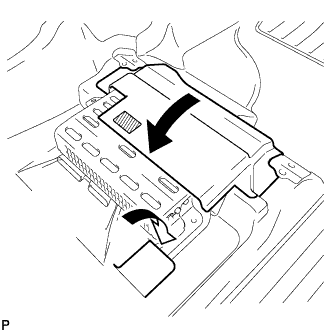

КОМПОНЕНТНЫЙ СТЕРЕОУСИЛИТЕЛЬ > УСТАНОВКА |
| 1. УСТАНОВИТЕ КРОНШТЕЙН УСИЛИТЕЛЯ № 2 |
Вставьте установочные шпильки кронштейна А в отверстия усилителя.
| *A | для моделей производства Pioneer | *B | для моделей производства JBL |
Установите кронштейн и закрепите его 2 винтами В.
| 2. УСТАНОВИТЕ КРОНШТЕЙН УСИЛИТЕЛЯ № 1 |
Вставьте установочные шпильки кронштейна А в отверстия усилителя.
| *A | для моделей производства Pioneer | *B | для моделей производства JBL |
Установите кронштейн и закрепите его 2 винтами В.
| 3. УСТАНОВИТЕ КРЫШКУ УСИЛИТЕЛЯ № 2 (для моделей с 14 динамиками) |
Установите крышку и введите в зацепление 3 фиксатора.
| 4. УСТАНОВИТЕ КРЫШКУ УСИЛИТЕЛЯ |
Установите крышку усилителя и закрепите ее 3 болтами и фиксатором.
| 5. УСТАНОВИТЕ КОМПОНЕНТНЫЙ СТЕРЕОУСИЛИТЕЛЬ С КРОНШТЕЙНОМ В СБОРЕ |
Установите усилитель и закрепите его 3 болтами.
| *A | для моделей производства Pioneer | *B | для моделей производства JBL |
Подсоедините 4 разъема.
|  |
Установите напольные коврики в первоначальном положении, как показано на рисунке, и введите в зацепление фиксатор.
| 6. УСТАНОВИТЕ ПРАВОЕ ПЕРЕДНЕЕ СИДЕНЬЕ В СБОРЕ |
Для сидений с ручным приводом:
Установите правое переднее сиденье в сборе (Нажмите здесь).
Для сидений с электроприводом:
Установите правое переднее сиденье в сборе (Нажмите здесь).
Для сидений с функцией облегчения посадки "Walk In":
Установите правое переднее сиденье в сборе (Нажмите здесь).
| 7. ПОДСОЕДИНИТЕ ПРОВОД К ОТРИЦАТЕЛЬНОМУ ВЫВОДУ АККУМУЛЯТОРНОЙ БАТАРЕИ |
| 8. ПРОВЕРЬТЕ КОНТРОЛЬНУЮ ЛАМПУ АВАРИЙНОГО СОСТОЯНИЯ SRS |
Проверьте контрольную лампу аварийного состояния SRS (Нажмите здесь).